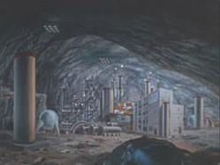

|
|
Janus VI |
|
||
|  |
| Classe | F |
| Specie senziente | Horta |
Un pianeta ricco di minerali, tra cui il pergium, in data stellare 3196 si è
rivelato abitato da una specie basata sulla chimica del silicio il cui habitat
naturale sono le profondità del pianeta. Dopo alcuni malintesi e la morte di
alcuni minatori, la Horta si è rivelata una specie pacifica che, in seguito, ha
accettato di collaborare all'estrazione dei minerali.
Nel 2267 il pianeta è privo di
qualunque attività vulcanica.